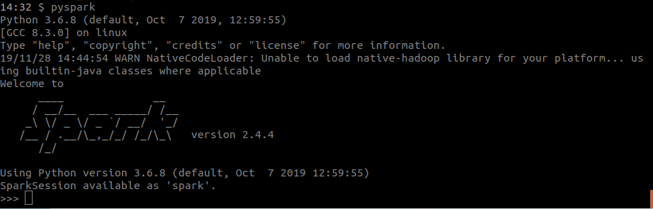

This documentation contains the step-by-step procedure to create a PySpark project using a CLI.
Apache Spark is a fast and general-purpose cluster computing system. It provides high-level APIs in Java, Scala, Python and R, and an optimized engine that supports general execution graphs. It also supports a rich set of higher-level tools including Spark SQL for SQL and structured data processing, MLlib for machine learning, GraphX for graph processing, and Spark Streaming.
PySpark is the Python API for Spark.
Apache Spark is an open-source distributed general-purpose cluster computing framework with (mostly) in-memory data processing engine that can do ETL, analytics, machine learning and graph processing on large volumes of data at rest (batch processing) or in motion (streaming processing) with rich concise high-level APIs for the programming languages: Scala, Python, Java, R, and SQL.
You could also describe Spark as a distributed, data processing engine for batch and streaming modes featuring SQL queries, graph processing, and machine learning. In contrast to Hadoop’s two-stage disk-based MapReduce computation engine, Spark’s multi-stage (mostly) in-memory computing engine allows for running most computations in memory, and hence most of the time provides better performance for certain applications, e.g. iterative algorithms or interactive data mining (read Spark officially sets a new record in large-scale sorting). Spark aims at speed, ease of use, extensibility and interactive analytics. Spark is often called cluster computing engine or simply execution engine. Spark is a distributed platform for executing complex multi-stage applications, like machine learning algorithms, and interactive ad hoc queries. Spark provides an efficient abstraction for in-memory cluster computing called Resilient Distributed Dataset. Using Spark Application Frameworks, Spark simplifies access to machine learning and predictive analytics at scale. Spark is mainly written in Scala, but provides developer API for languages like Java, Python, and R.
Why Spark?
Follow these steps to set-up the environment required for working with PySpark projects. For installation in Windows, follow the link How to Install Apache Spark on Windows. For installation on Ubuntu, follow these steps:
1. Download and Install JDK 8 or above. Before you can start with spark and hadoop, you need to make sure you have java 8 installed, or to install it.
java -version
Select the code in the pad and hit Ctrl+R to watch it unfold in your browser!
If JDK 8 is not installed you should follow the tutorial How to Install Oracle Java JDK 8 in Ubuntu 16.04?
2. Download and install Apache Spark Now the next step is to download latest distribution of Spark. Visit the website https://spark.apache.org/downloads.html and there you will find the latest distribution of Spark framework.
mkdir spark
mv ~/Downloads/spark-2.3.0-bin-hadoop2.7.tgz spark
cd spark/
tar -xzvf
spark-2.4.4-bin-hadoop2.7.tgz

3. Configure Apache Spark Now you should configure it in path so that it can be executed from anywhere.
vi ~/.bash_profile
Add following entry:
export SPARK_HOME=~/spark/spark-2.4.4-bin-hadoop2.7/
export PATH="$SPARK_HOME/bin:$PATH"
Run the following command to update PATH variable in the current session:
source ~/.bash_profile
After next login you should be able to find pyspark command in path and it can be accessed from any
directory.
4. Check PySpark installation

$ pyspark
To exit pyspark shell, type Ctrl-z and enter. Or the python command exit()
>>> nums = sc.parallelize([1,2,3,4])
>>> nums.map(lambda x: x*x).collect()
5. Install PySpark using pip
pip install pyspark
pyspark
To exit pyspark shell, type Ctrl-z and enter. Or the python command exit()
1. create
pysparkcli create --master [MASTER_URL] --name [PROJECT_NAME] --cores [NUMBER]
2. run
pysparkcli run -n [PROJECT_NAME]
Let’s learn by example. We’ll assume you have PySpark installed already. You can tell PySpark is installed and which version by running the following command in a shell prompt (indicated by the $ prefix):
$pyspark
If PySpark is installed, you should see the version of your installation. If it isn’t, you’ll get an error. This tutorial is written for Spark 2.4.4, which supports Python 2.7.15 and later.
Creating a project
If this is your first time using PySpark, you’ll have to take care of some initial setup. Namely, you’ll need to auto-generate some code that establishes a PySpark project – a collection of settings for an instance of PySpark.
pip install pysparkcli
From the command line, cd into a directory where you’d like to store your code, then run the following
command:
$ pysparkcli create -m local[*] -name sample
This will create a sample directory in your current directory.
Let's look at what create has done.
sample
├── __init__.py
├── src
│ ├── app.py
│ ├── configs
│ │ └── __init__.py
│ ├── __init__.py
│ └── settings
│ ├── default.py
│ ├── __init__.py
│ ├── local.py
│ └── production.py
└── tests
└── __init__.py
These files are:
The development server
Run the follwing code to run your project:pysparkcli run sample
You'll see the following in your command line:
Started running project: sample/
19/11/25 10:37:07 WARN NativeCodeLoader: Unable to load native-hadoop library for your platform... using
builtin-java classes where applicable
Hello World!.
All the documentation in this page is taken from: